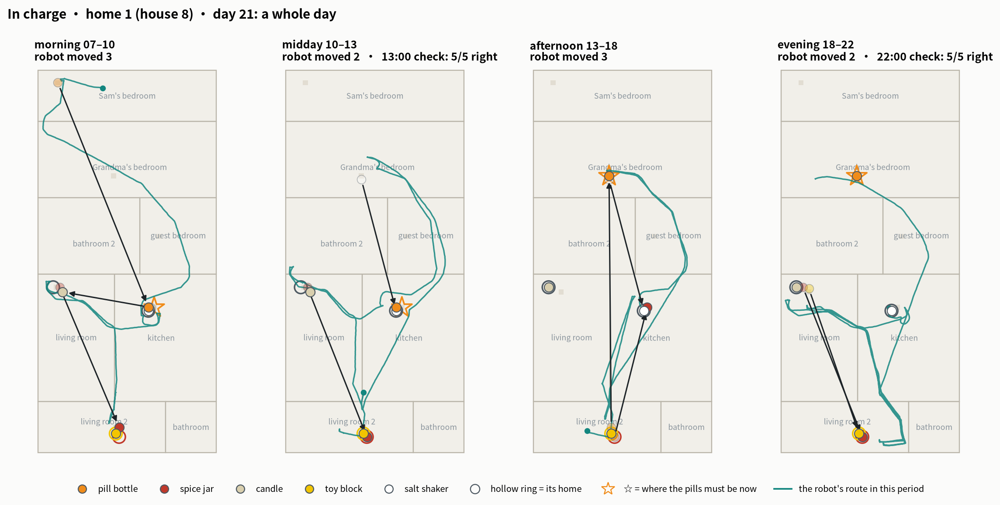

Read in English
Nobody Had to Tell It: tasks and duties for a home robot
Four simulated homes, 30 days each, three ways of handing over the work: asked when the family notices, put in charge on day one, or apprenticed for ten days first.
中文阅读
不用交代，它也会管起来：家用机器人的任务与职责
四个家、各 30 天（仿真），三种交代方式：家人发现了再叫它做、第一天就交给它管、先当 10 天学徒再交接。
Hao Chen
· haochen2115@gmail.com · October 2026